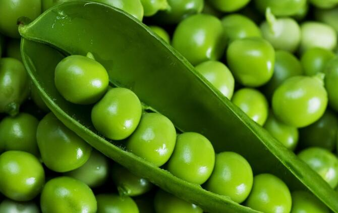

豌豆有何营养价值？应该怎么吃？
起源 豌豆即我们常说的青豆，又叫寒豆、雪豆，拉丁学名Pisum sativum Linn,英文名Garden Pea,Fiele pea，是双子叶被子植物（新长出来的芽有两片叶子，种子被种皮包裹）。
豌豆在很早以前就已经被种植食用了，它的起源地说法不一，有人认为是埃塞俄比亚，也有人认为是伊朗，但不可否认的是豌豆是古老的农作物，在《四民月令》中有相关的栽种记录，由原产地向东传入印度北部，再经过中亚西亚传到中国。
外形 豌豆整株高80-180厘米，除了紫色或白色的花外其他部位都呈绿色。带有种皮的豌豆叫豌豆荚，长5-10厘米，呈长椭圆形，表面光滑。新鲜豌豆荚包裹的成熟豌豆是圆鼓鼓的，一个荚一般有2-10颗豌豆不等，有些品种的豌豆表面光滑，有些则有皱纹。豌豆变干后呈黄色，新鲜豌豆可以炒着吃，干豌豆则可以炸成酥脆可口的小零食，深受人们喜爱。

分布剂播种 豌豆主要分布在我国中部以及东北部地区，在河南、湖北、江苏等省区都有大量种植。因为豌豆对光照时长和土壤条件的要求不严，所以劳作者可根据地域条件和需求，在合适的季节进行豌豆播种，大部分地区春种夏收，也有很多劳作者选择利用冬天闲置的土地进行播种，在来年春末收成。
营养价值
豌豆是吃法比较多的一种蔬菜，嫩绿的豆荚可以连荚带豆一起炒着吃，豆荚老后还可以把荚剥掉，取出里面圆圆鼓鼓的豌豆，将它制成很多美味的菜品和点心。前面两种吃法人尽皆知，还有一种比较冷门的吃法是摘下植株顶部发出的嫩芽（即豌豆苗，也叫豌豆尖），过水洗净后做煮火锅的配菜，也可以直接清炒，绿色健康。这种吃法在中国南方比较常见，北方一般是前两种吃法。
现在人们倡导绿色健康，豌豆作为从嫩芽到种子都散发着绿色光芒的一种蔬菜，它有何值得人们食用的地方？
别看豌豆颜色单一，其实它所含有的营养物质不胜枚举。豌豆含有人体运营必需的能量、蛋白质、脂肪以及碳水化合物，所以人们也将豌豆当作主食。除此之外，含有的维生素、微量元素的种类更是不在话下，其中每100可豌豆含有维生素A39微克，维生素C14毫克，维生素E1.21毫克，钙21毫克，铁1.7毫克，是名副其实的“营养宝藏”。豌豆荚和豌豆苗里也含有维生素C，食用可帮助分解人体内的亚硝胺，具有防癌抗癌的功效。《本草纲目》里“祛除面部黑斑，令面部有光泽。”所提到的豌豆美容养颜的功效就是维生素A在起作用，所以适量食用豌豆对皮肤也有好处。另外，豌豆和豆苗里含有膳食纤维，有防止便秘和清理肠胃的作用，在每天的餐食中加入适量豌豆也不失为一种润肠通便的良方。需要注意的是豌豆再好也不能多吃，吃太多会引起腹胀，不仅起不到润肠通便的作用还会导致消化不良。
 上一篇
上一篇